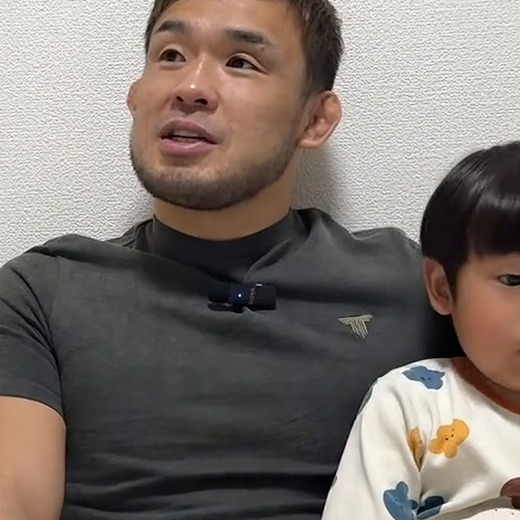
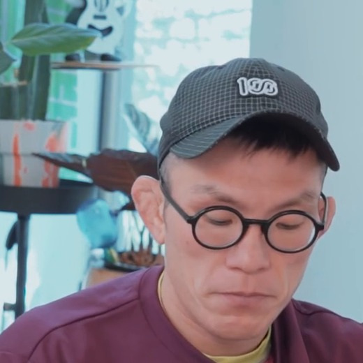
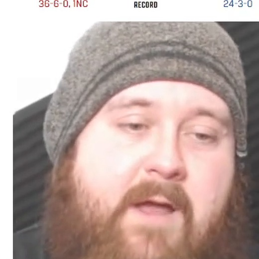

出典：U-NEXT格闘技
出典：UFC on Paramount+
UFCカタールで、堀口恭司がアスー・アルマバエフに判定勝ちしました
出典：UFC Japan
ただ、テイクダウンを7回奪われ、抑え込まれた時間は9分を超えています
出典：Zuffa LLC／UFC
HORIGUCHI WINS
判定3-0で再起 格闘家と海外の反応
UFC QATAR 堀口恭司 vs アスー・アルマバエフ
格闘家や海外のファンは、この試合をどう見たのでしょうか
出典：UFC
出典：UFC Japan
29対28をつけたジャッジは、2ラウンドだけをアルマバエフにつけています
出典：UFC
6月にマネル・ケイプに敗れた堀口にとっては、再起戦での勝利です
出典：UFC Japan
KYOJI HORIGUCHI
UFC 10勝2敗
日本人2人目のUFC2桁勝利
プロ 37勝6敗1分
岡見勇信に続いて、日本人で2人目の2桁勝利になりました
出典：UFC
一方のアルマバエフは、UFCでの3連勝が止まりました
出典：UFC
出典：UFC
1ラウンド、堀口はカーフキックと右のハイキックで先手を取ります
出典：UFC
終盤に蹴り足をつかまれて倒されますが、下からギロチン
アルマバエフは苦しい表情を見せながら、ブザーまで耐えました
出典：UFC Japan
第2ラウンドに入ると、アルマバエフが組み付いて離れない展開に
堀口は金網を背に座った姿勢で押さえ込まれる時間が続きます
出典：UFC Japan
それでも下から殴り続け、ギロチンを狙い続けたのは堀口でした
出典：UFC公式スタッツ
堀口 − アルマバエフ
テイクダウン 0 − 7
コントロール 0:49 − 9:43
総打撃 158 − 22
サブミッション試行 2 − 0
一方で総打撃数は、堀口の158に対して、アルマバエフは22でした
出典：UFC
出典：UFC
出典：UFC
インタビュアーのマイケル・ビスピンは、謝る必要はない、
ダメージを与えようとしていたのは君だけだと返しています
出典：UFC
出典：UFC
フライ級王者のジョシュア・ヴァンは、いちがつにマネル・ケイプとの防衛戦を控えています
出典：UFC
バックステージでは、アルマバエフのことをこう話しています
出典：UFC
出典：UFC
出典：U-NEXT格闘技
U-NEXTのインタビューでは、奥さんにある言葉をかけられていたことも明かしています
出典：U-NEXT格闘技
出典：UFC
敗れたアルマバエフ本人のコメントは、まだ出ていません
出典：DarTeam（Instagram）
所属するDarTeamは、一度の負けでお前の強さは消えない、俺たちはお前を信じていると投稿しました
出典：UFC Japan
出典：かねまさのひとりごと
中継で解説を務めた金原正徳は、完勝と言っていいと話します
出典：かねまさのひとりごと
立つのがうまく体も強い堀口を、寝かせ続けたのは見事だったといいます
出典：かねまさのひとりごと
完勝

何もさせずに
完勝だった
出典：扇久保博正 おぎちゃんねる。
出典：扇久保博正 おぎちゃんねる。
カーフキックから組み立て、相手にほとんど攻撃を出させなかったと話します
出典：扇久保博正 おぎちゃんねる。
アルマバエフについても、回転系の後ろ蹴りや蹴り足をつかんでのテイクダウンを挙げて、
完勝

本当に
完勝だったと思う
出典：青木真也さぶちゃんねる
青木真也も完勝と見た上で、試合をラウンドごとに分析しています
出典：青木真也チャンネル
右手を高く立てて、堀口が得意とする踏み込みの左フックを防いでいたといいます
出典：青木真也チャンネル
それでもアルマバエフは上から一切殴っておらず、そこが評価を分けたと話します
出典：青木真也チャンネル
そして第3ラウンドの堀口には、明らかに余裕があった
第2ラウンドに、あえて相手の体力を使わせていたのではないかと見ています
出典：青木真也さぶちゃんねる
ただ、大きなインパクトを残してタイトル挑戦をつかむという、堀口が求めた勝ち方はできなかったとも話しています
出典：青木真也さぶちゃんねる
出典：大沢ケンジ / Kenji Osawa
大沢ケンジと川尻達也の2人も、生配信で試合を見守っていました
出典：大沢ケンジ / Kenji Osawa
ランカーと戦ってみろこの舞台に立てない選手が何人いるか
出典：大沢ケンジ / Kenji Osawa
出典：大沢ケンジ / Kenji Osawa
2人は、もしUFCの日本大会が開かれるなら、堀口と平良達郎の対戦を見たいと盛り上がりました
出典：川尻達也のじりラジオ
配信のあと、川尻のじりラジオでも2人はこの試合を振り返っています
アルマバエフは押さえ込むだけで、ほとんど殴らなかった
今の判定基準を理解していないのではないかと指摘しました
出典：川尻達也のじりラジオ
レスラーがしがみついて相手を封じる戦い方は、もう通用しなくなった
そんな時代の変わり目を感じた試合だったとも話しています
出典：UFC Europe
出典：UFC
堀口の方がフィニッシュを狙って、多く打撃を当てている。判定は堀口だ
Horiguchi is making more of an effort to finish the fight and land more strikes. He should get the decision
いいね 1,130
元UFC2階級王者のヘンリー・セフードは、試合中にこう投稿していました
出典：UFC

THE MMA GURU
@THATBOYMMAGURU
X
文句なしの30-27で堀口。アルマバエフは2Rと3R、時間稼ぎのコントロール以外に何もしていない
Clear 30-27 Horiguchi win over Almabayev. Almabeyev didnt land or do anything of significance in round 2 or 3 other than stall control time
いいね 1,438
大手解説チャンネルのTHE MMA GURUは、文句なしの堀口と断言
アルマバエフが時間を稼ぐコントロール以外に、何もしていなかったと書いています
出典：MMA Junkie
ジャッジの目には組みよりも堀口のダメージが上回ったと伝えました
出典：UFC
恭司はこの階級の歴史でも屈指の実績を持つ。UFC王者になる資格がある者がいるとすれば彼だ。もうすぐそこまで来ている
堀口のヘッドコーチ、マイク・ブラウンは、UFC王者になる資格がある者がいるとすれば、
出典：UFC
YouTubeのコメント
N
視聴者のコメント
ジャッジがやっとコントロールよりダメージを評価した！
いいね 66
U
視聴者のコメント
恭司が謝る必要なんてない。攻めていたのは彼だ
いいね 62
Z
視聴者のコメント
恭司は戦いに来た。アスーは抱きつきに来た
いいね 55
UFC公式の動画には、こんなコメントが寄せられました
出典：UFC Japan
YouTubeのコメント
W
視聴者のコメント
スタンドに戻さなかったレフェリーはクビにしろ。下から殴ってギロチンを狙っていたのは堀口だけだ
いいね 69
B
視聴者のコメント
36歳でこのレベルのフライ級は本当に珍しい。恭司に敬意を
いいね 75
抑え込みを続けたアルマバエフや、試合を止めずに寝技を続けさせたレフェリーへの批判も目立ちます
出典：UFC Japan
Xの投稿
D
ファンの投稿
堀口やっぱり強え。36歳、年間4試合で3勝1敗。まだまだ全盛期
いいね 893
J
ファンの投稿
『ファンの人はつまんないんじゃないですか』って、こっちは堀口が試合するだけで楽しいんだ。勝てばええねん
いいね 762
出典：UFC Japan
Xの投稿
L
ファンの投稿
堀口が2回見せたエスケープがバケモンすぎた
いいね 213
S
ファンの投稿
完勝。でも堀口がこんなにテイクダウンされるのも中々見ないし、アルマバエフも凄い
いいね 140
X
ファンの投稿
UFC復帰から1年で3勝1敗。17勝2敗、17勝2敗、24勝3敗の相手にちゃんと勝つのは流石
いいね 102
下からの脱出のうまさに驚く声や、アルマバエフの強さを認める声もありました
出典：UFC
出典：UFC
リベンジの機会が来るのか、それとも王者ヴァンに挑むのか
出典：UFC